I design hardware that holds up on the shop floor, from CAD to mass production.
Product design and development engineer with 6+ years across CAD, DFM, tooling and fixture design, prototype validation and NPI, spanning powertrain systems and connected consumer electronics.
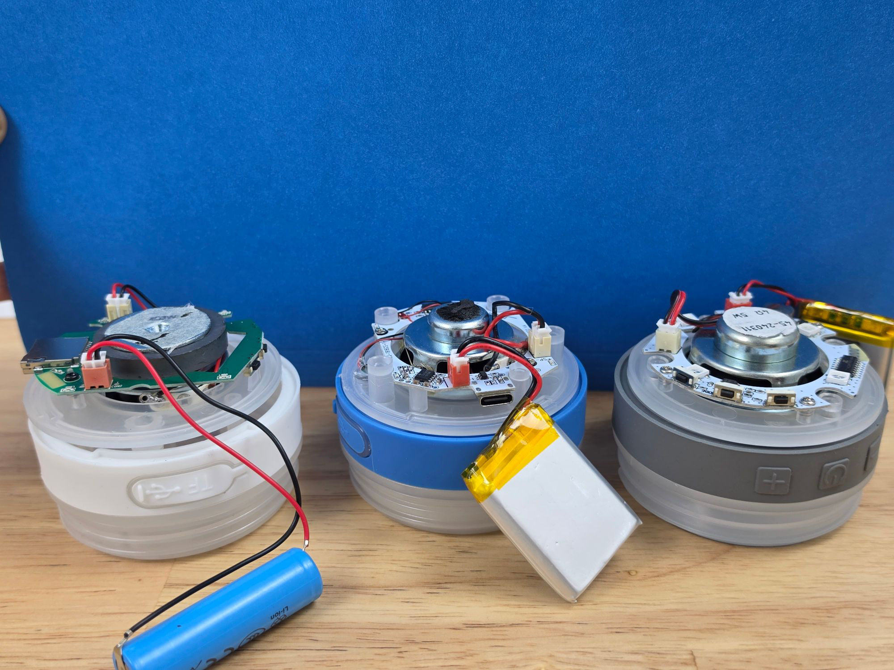
Case studies
Five projects covering the full development cycle: benchmarking and teardown, concept CAD, DFM, fixture and test-rig design, simulation, and prototype validation before tooling.
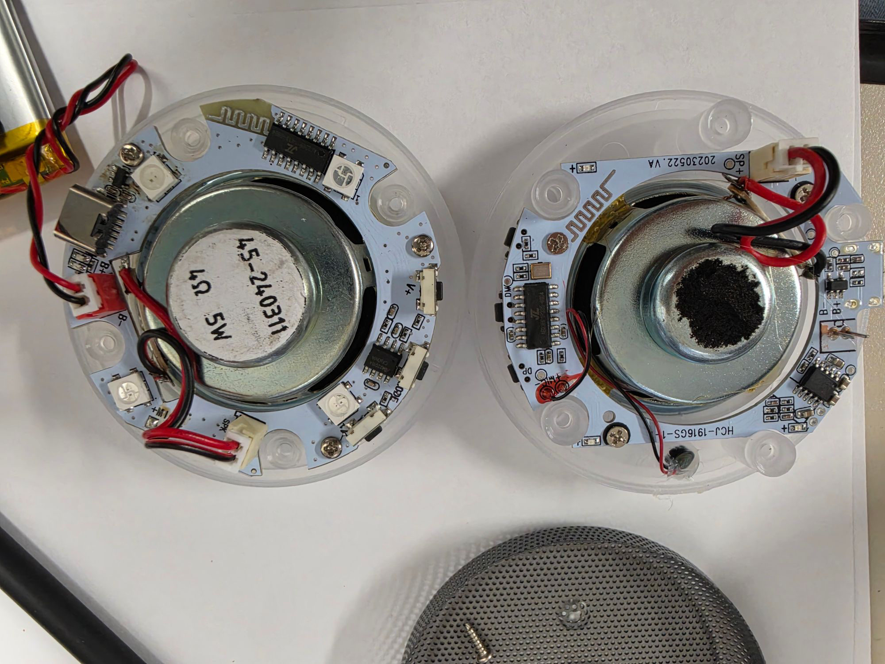
01Smart speaker teardown & enclosure redesign
Benchmarked a shipped licensed speaker against concept and market units, then used what we found to drive a smaller, lower-cost enclosure. The new form was validated with 3D-printed prototypes before committing to tooling.
 02
02
Dynamic gearbox test rig & shaft redesign
NX CAD test fixture that simulates real-time load on the Paddy Harvester powertrain, plus a redesigned reduction shaft.
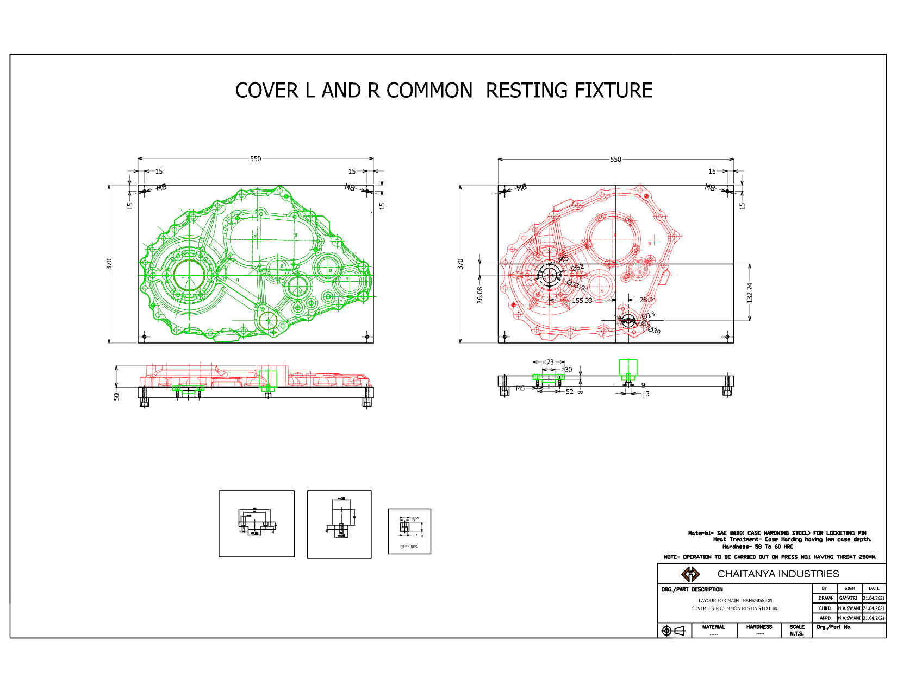
03Transmission case resting & shimming fixtures
Press-line fixtures, shim-calculation layouts and an oil-seal pressing dolly for transmission case assembly (OP 130).
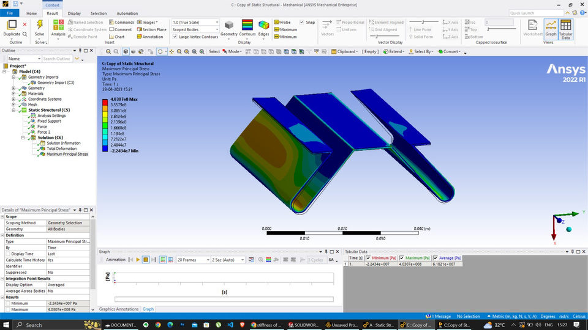
04Stone cladding anchor system
A 3-part extruded aluminium anchor that mechanically fixes brittle stone to steel structures. Modeled in SolidWorks and validated in ANSYS against IBC requirements.
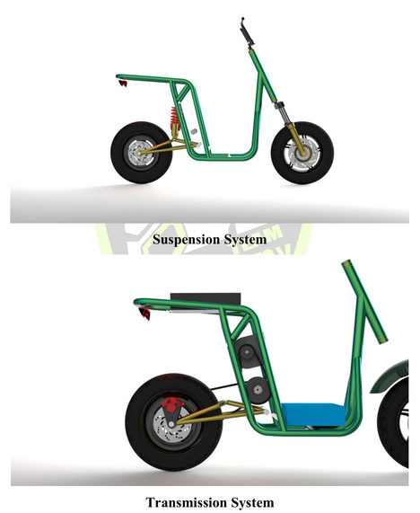
05Electric two-wheeler prototype
A full EV prototype for a national design competition: chassis, drivetrain, battery pack, and impact and modal CAE.
Engineer first. Bridge between R&D and manufacturing.
I started on the shop floor and at the CAD bench, and I still design from there.
My career began designing powertrain tooling, fixtures and gearbox test systems at Mahindra Farm Machinery, where hardware had to survive production, not just review. Since then I've managed BOM and ECO control and NPI builds on automation-system assemblies, and I now lead consumer electronics programs at Hyundai Technology. There I review prototypes and mechanical and industrial design, and connect our R&D team with ODM partners in India and China.
Across all of it, I use real evidence like teardowns, CAD overlays, FEA and 3D-printed fit checks to close design, fit and quality issues before tooling is cut.
Design
SolidWorks (CSWP), NX, Creo, CATIA. Fixtures, weldments, sheet metal, GD&T.
Validate
ANSYS FEA, Fluent and Icepak, prototype builds, root-cause analysis.
Deliver
DFM, BOM and ECO/ECN, PLM/ERP, supplier and ODM management across 3 countries.
Benchmark
Teardowns, competitor analysis and requirements.
Concept CAD
Parametric 3D models, assemblies and layouts.
DFM & GD&T
Toleranced drawings for the process and the vendor.
Simulate
FEA, CFD and thermal checks before metal is cut.
Prototype
3D prints, fit checks, test rigs and fixtures.
Release & NPI
BOM and ECO control, supplier readiness, launch.
Career path
From automotive testing, to powertrain manufacturing, to product development and consumer hardware in the US.
● Current
Technical Product Manager
- Define requirements and technical specs for photo frames, Android tablets, monitors and a Wi-Fi/Bluetooth smart speaker, balancing UX, cost, quality and manufacturability.
- Technical bridge between R&D and ODM partners: evaluate hardware architecture, ODM capability and certification cost.
- Review prototypes, mechanical/industrial design and firmware builds to close fit and quality issues across 3 CE programs.
- Direct engineering and supplier teams in India and China across time zones.
Project Manager, Product Development & Supply Chain
- Standardized BOM, ECO/ECN and drawing management in SolidWorks, Creo, PLM and ERP, which cut rework from out-of-sync documentation.
- Ran cross-functional build schedules and material readiness for automation-system assemblies around NPI milestones.
- Designed and FEA-validated a stone cladding anchor system in SolidWorks and ANSYS.
Manufacturing & Operations Engineer
- Designed custom tooling and fixtures for powertrain assembly, cutting production cycle time by 50%.
- Engineered a dynamic gearbox test rig in NX CAD: +25% testing efficiency and −14% warranty claims.
- Material readiness for the $1.8M, 88-hp Paddy Harvester 2100 program with 25+ suppliers; cut lead-time variability by 27%.
Systems Engineering Intern
- Supported powertrain and emissions testing, coordinating components, test equipment and vendor logistics across multiple OEM platforms.
M.S. Engineering Management
California State University, East Bay · Product design & development focus
B.E. Mechanical / Automobile Engineering
Pune University
Skills & tools
Hands-on CAD and simulation depth, plus the manufacturing and program skills needed to get hardware out the door.
AMechanical design & CAD
BDrawings & standards
CSimulation & validation
DPrototyping & manufacturing
EHardware & R&D bridge
FProgram & product
Certifications
Certified SolidWorks Professional
Advanced 3D modeling and design validation
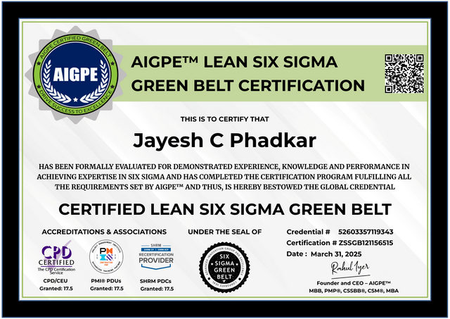
Lean Six Sigma Green Belt
AIGPE · DMAIC for process and cost improvement
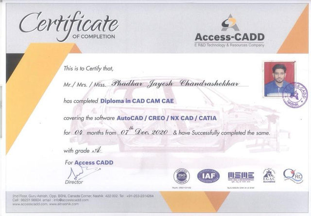
Diploma in CAD/CAM/CAE
Access-CADD · AutoCAD, Creo, NX, CATIA
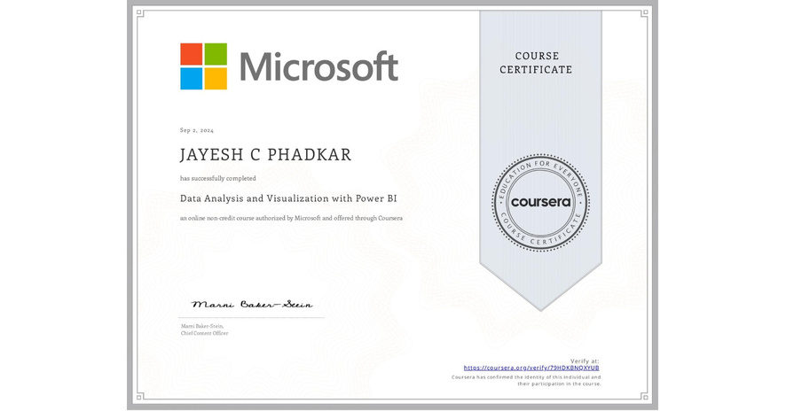
Data Analysis & Visualization, Power BI
Microsoft / Coursera · plus Supply Chain Software & Tools (Unilever)
Some snapshots
More drawings, CAD, shop-floor and prototype photos from across my projects. Click any image to enlarge.
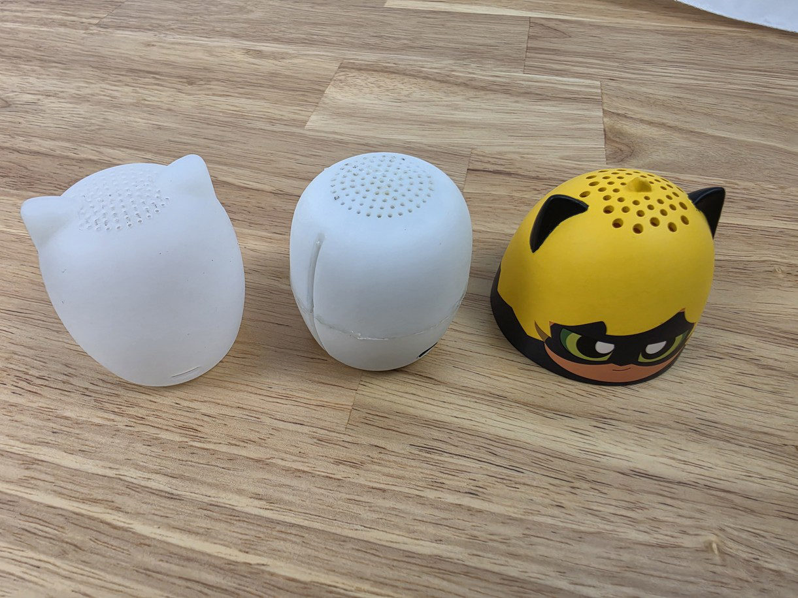
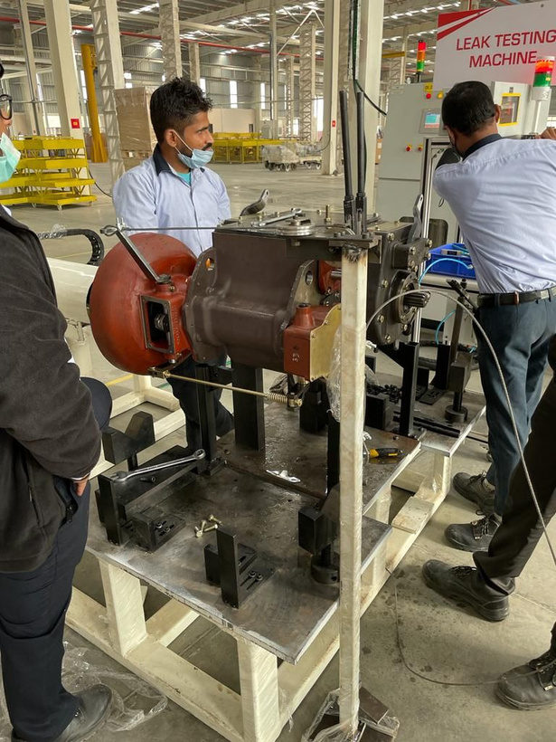
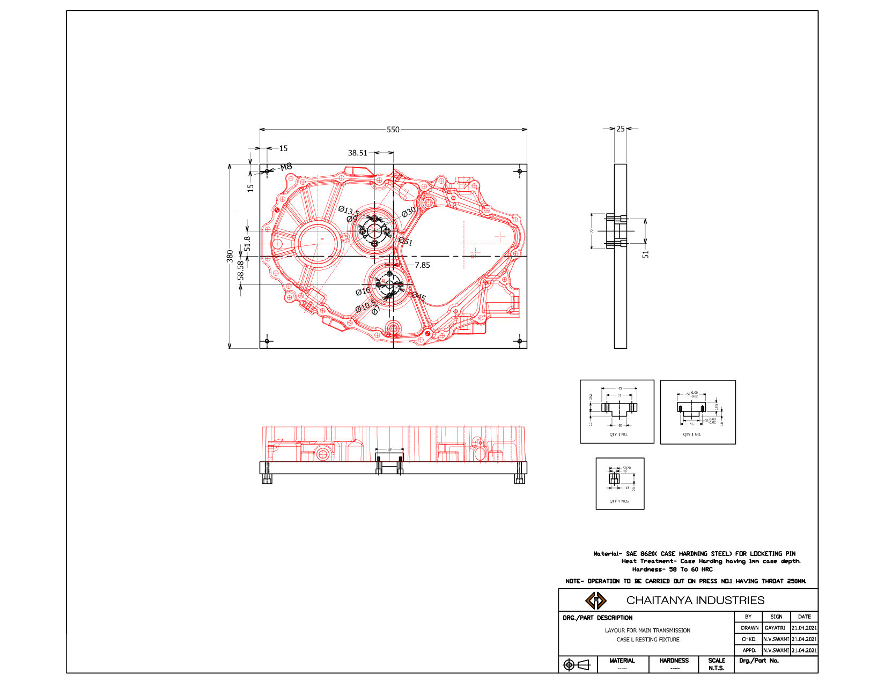
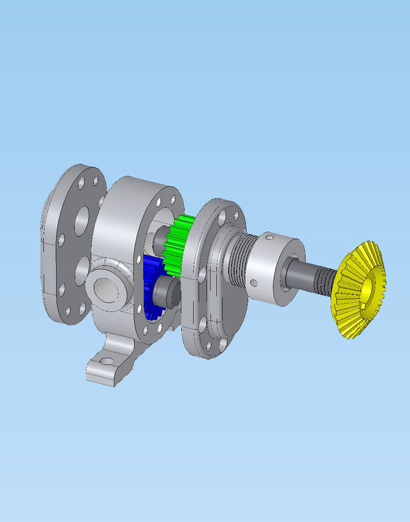
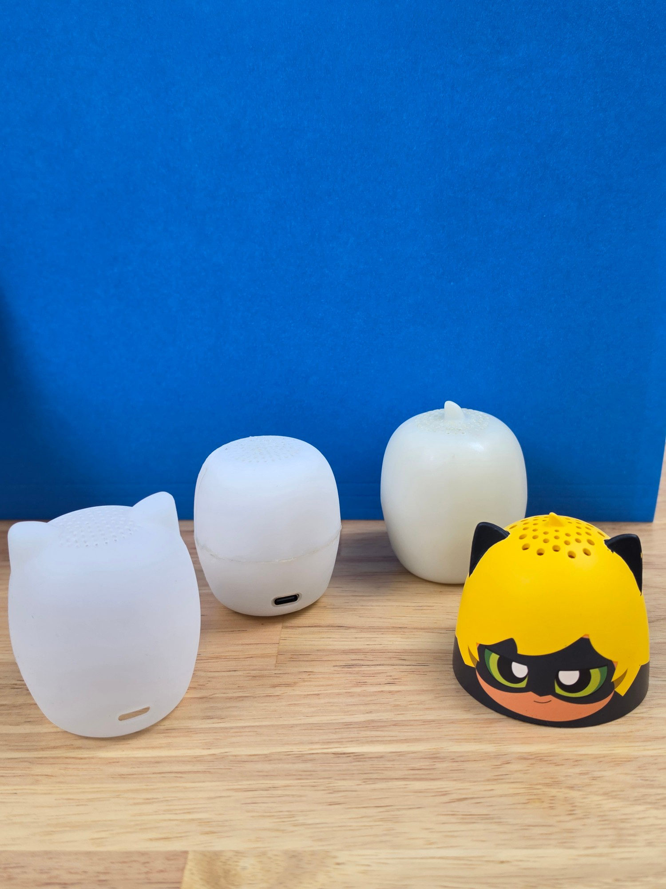
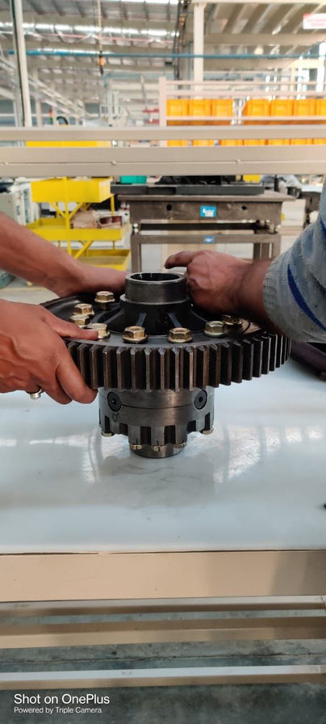
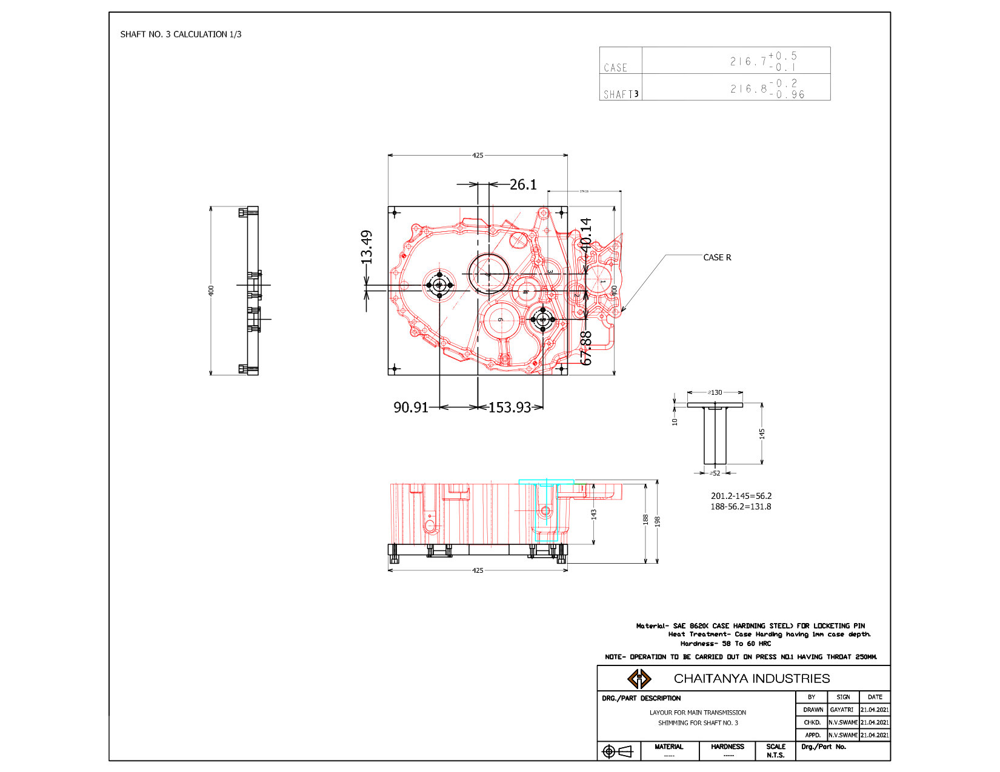
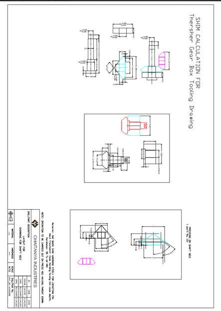
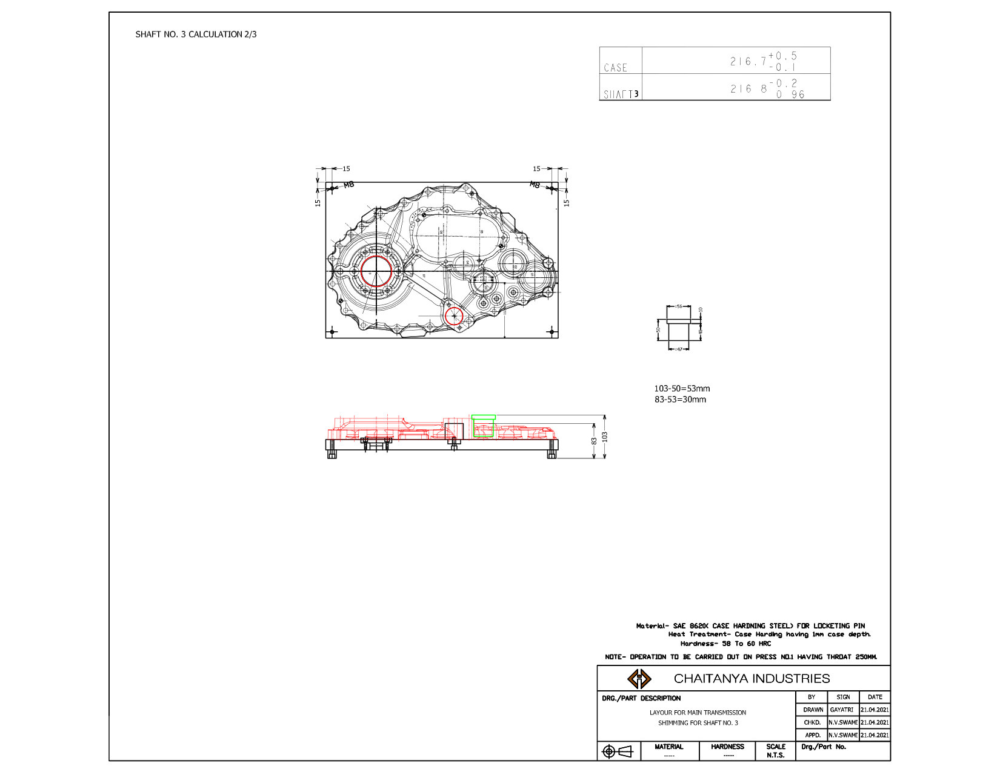
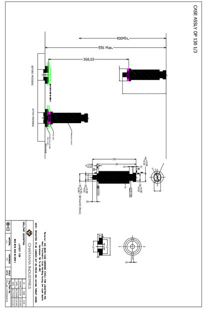
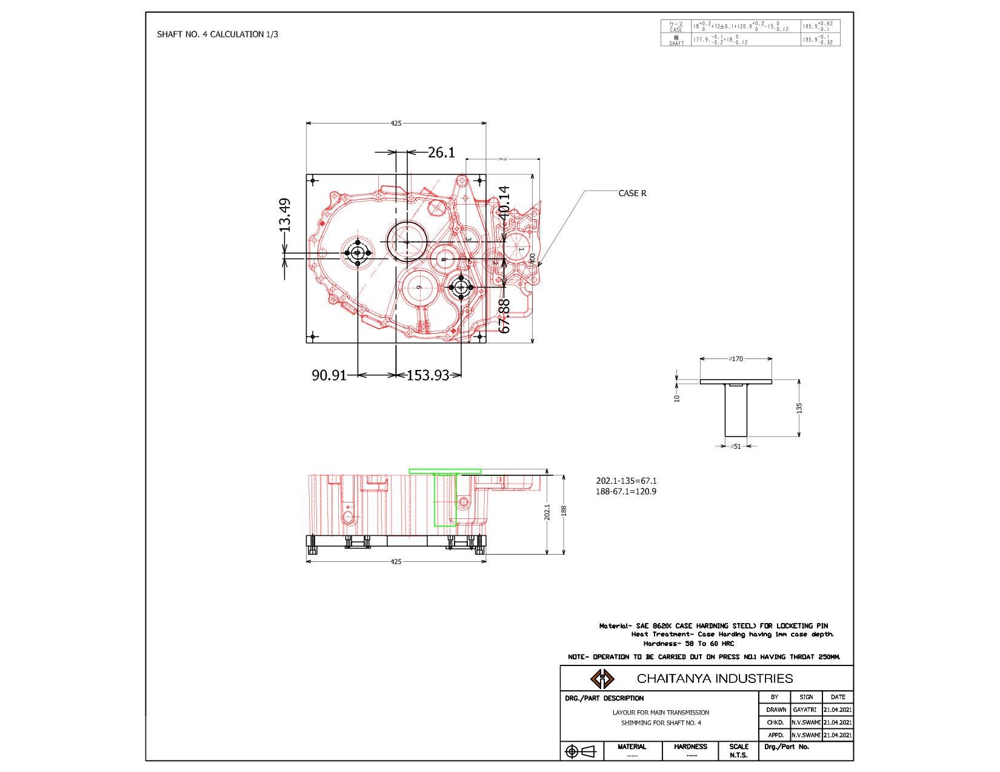
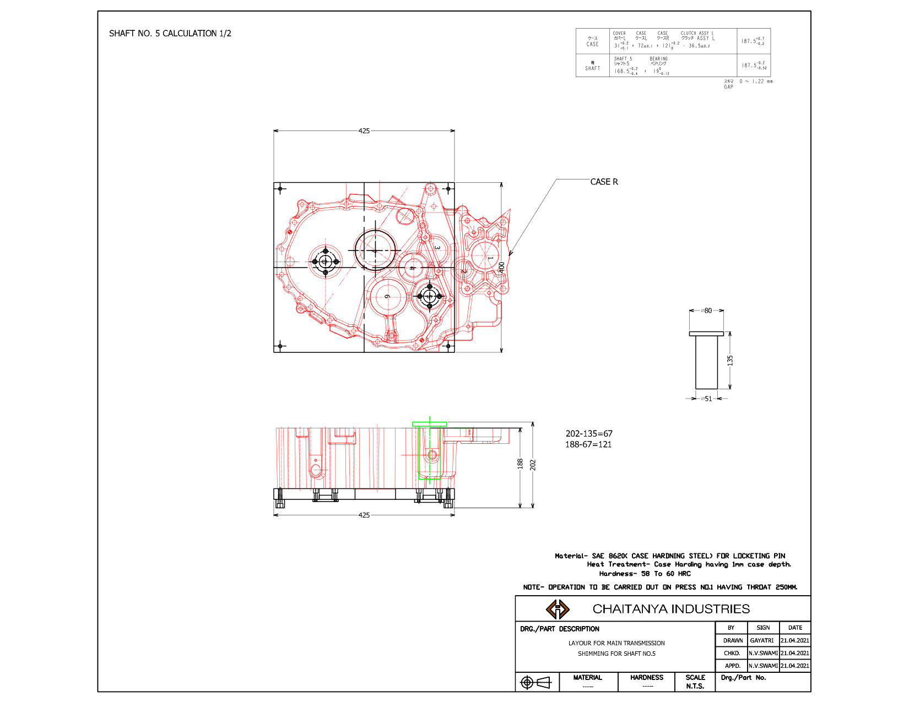
Let's build hardware that ships.
I'm looking for product design, R&D and NPI roles where I can take hardware from concept through production. I'm happy to walk through any of these projects in more detail.